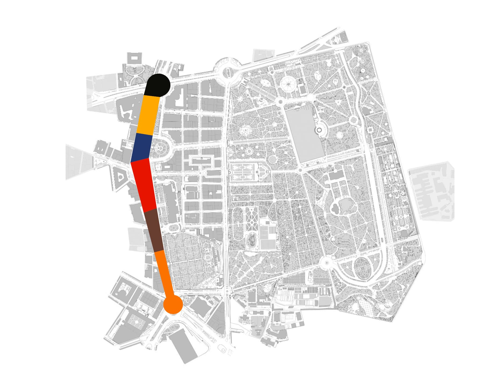
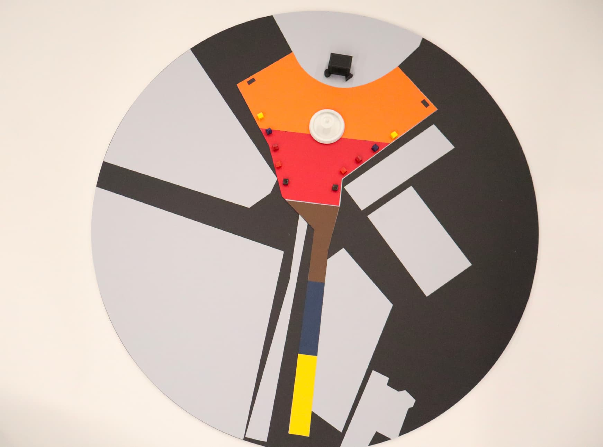
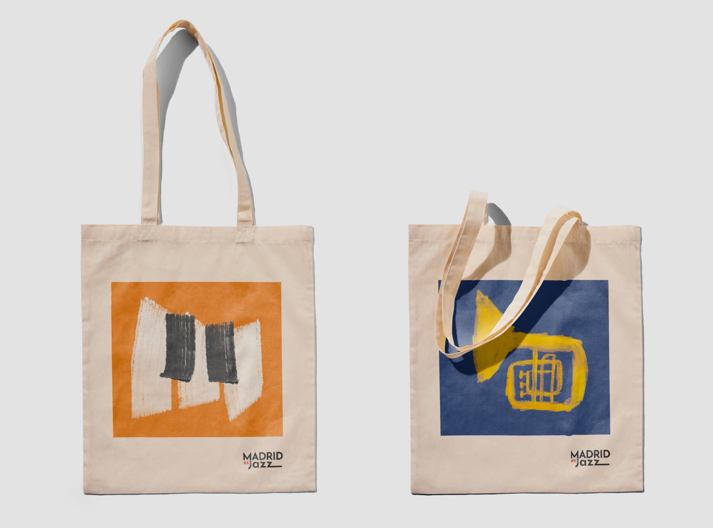

Contexto
Madrid es Jazz busca representar el género musical del jazz a través de la sinestesia musical, utilizando los cinco sentidos para manifestar su percepción surreal a través de un recorrido por el Paseo del Prado. Se resalta la relevancia del jazz en la ciudad de Madrid y cómo es un espejo de la cultura urbana.
Aunque existen eventos dedicados al jazz, este se destaca por su naturaleza llamativa, inmersiva y educativa. Madrid no solo es la capital de España, sino también un epicentro vibrante de culturas musicales donde el jazz ocupa un lugar destacado.
Proceso
El proceso partió de investigar cómo traducir visualmente la experiencia sonora del jazz. Se trabajaron referencias de la época dorada del género, la improvisación como concepto gráfico y la relación entre música y espacio urbano en Madrid.


Resultado
La identidad resultante combina tipografía expresiva, formas orgánicas que evocan el movimiento del sonido y una paleta que refleja la energía nocturna de la ciudad. El sistema visual funciona tanto en aplicaciones físicas del evento como en comunicación digital.

Ficha técnica
- Año
- 2024
- Asignatura
- Diseño de Eventos
- Categoría
- Identidad Visual, Diseño Gráfico, Planimetría
- Herramientas
- Adobe Illustrator, InDesign